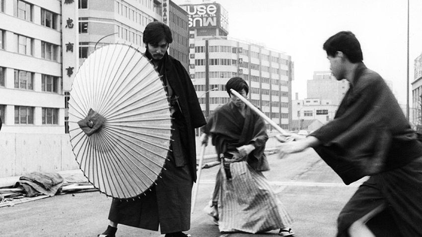
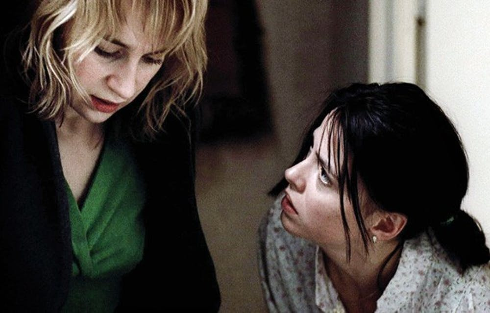
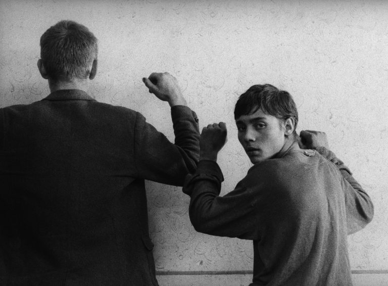

Films of Japanese New Wave

The Japanese New Wave is a group of loosely-connected Japanese filmmakers during the late 1950s
and into
the 1970s. Although they did not make up a coherent movement, these artists shared a rejection of
traditions and conventions of classical Japanese cinema in favor of more challenging works, both
thematically and formally. Coming to the fore in a time of national social change and unrest, the films
made in this wave dealt with taboo subject matter, including sexual violence, radicalism, youth culture
and deliquency, Korean discrimination, queerness, and the aftermath of World War II. They also adopted
more unorthodox and experimental approaches to composition, editing and narrative.
Films of Romanian New Wave

The Romanian New Wave is a movement in Romanian cinema known for its expressive cinematography
and the
thematic focus on the effects of communism on the Romanian everyman.
The Romanian New Wave began with four films released between 2004 and 2005.
The Romanian New Wave is a genre of realist and often minimalist films made in Romania since the
mid-aughts, starting with two award-winning shorts by two Romanian directors, Catalin Mitulescu and
Cristi Puiu. This was followed up by 4 Months, 3 Weeks and 2 Days by Cristian Mungiu which received
significant
international attention.
Romanian New Wave filmmakers have continued to make films that are realistic and minimally stylized
while addressing matters of social crisis and political change in Romania.
Films of Czechoslovak New Wave

The Czechoslovak New Wave was a movement in cinema beginning in 1963 and lasting until the end
of the
Prague Spring reforms of 1968. Led by students of the Film and Television School of the Academy of the
Performing Arts in Prague (FAMU), the arrival of this new wave of cinema came about largely as a result
of new directions in the arts generally and the pressure for social and political reform that developed
both inside and outside of the Communist Party in the 1960s – a collective pressure that led to the
abolition of censorship and the movement towards increased democratisation.